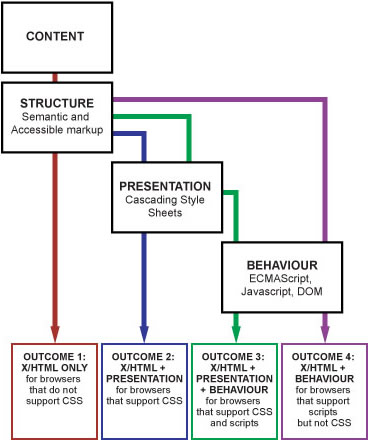

Die Aufgabe und der Zweck von JavaScript ist nicht ein für alle Mal festgelegt, sondern hat sich im Laufe der Zeit immer wieder gewandelt. Dazu tragen Dokumentationen, Fachartikel und Scripte bei, die ein bestimmtes Verständnis von JavaScript verbreiten. Die Verwendung von JavaScript ist nie eindeutig positiv oder eindeutig negativ zu sehen. Heute gibt es keine einheitliche Auffassung davon, wozu JavaScript überhaupt gut sein soll und wann es besser vermieden werden sollte.
JavaScript blickt auf eine düstere Vergangenheit zurück, in der die Sprache vor allem für unnütze Spielereien, bedeutungslose »Dynamik« und auch zur Gängelung der Anwender missbraucht wurde. Anstatt Inhalte einfacher zugänglich zu machen, erschwerten oder verhinderten manche Scripte den Zugang. Dadurch haftete JavaScript lange Zeit ein zweifelhafter Ruf an.
Der JavaScript-Gebrauch verlief lange ungelenkt und es fehlte ein theoretischer Unterbau, der die sinnvolle Anwendung von JavaScript begründete. Es gab bereits einfache Faustregeln darüber, wann und wie JavaScript eingesetzt werden sollte: JavaScript sei nur ein optionaler, das heißt weglassbarer Zusatz, der die Bedienung vereinfachen und die Benutzerfreundlichkeit steigern soll. Daran hielten sich allerdings nur wenige Webautoren. Auch fehlte eine allgemeine Theorie, die die Rolle von JavaScript im Webdesign bestimmte.
Fest steht, dass die gezielte Aufwertung von Webseiten mit JavaScript die Bedienung maßgeblich verbessern kann. Dieser Abschnitt untersucht die die Voraussetzungen dafür. Die vorgestellten Theorien sind nicht der Weisheit letzter Schluss, sondern lediglich der aktuelle Stand einer Debatte, die sich stets weiterentwickelt.
Im Zuge der sogenannten Webstandards-Bewegung setzen sich viele Webentwickler für einen sinnvollen und korrekten Einsatz der Webtechniken HTML und CSS ein. Das Ziel waren inhaltsvolle, barrierefreie und anpassungsfähige Websites. In diesem Zusammenhang wurden die Grundlagen für modernes JavaScript erarbeitet, wie etwa die Trennung von Struktur und Layout.
Während der HTML- und CSS-Gebrauch zu dieser Zeit reformiert wurde, blieb JavaScript lange Zeit ausgeklammert. Erst ab dem Jahre 2004 machten sich einige daran, auch JavaScript einen neuen Sinn zu verleihen und den sinnvollen JavaScript-Gebrauch zu erforschen. Heraus kam das sogenannte Schichtenmodell, das den drei Webtechniken HTML, CSS und JavaScript gewisse Funktionen zuweist und sie aufeinander aufbauen lässt.
Wir haben bereits in der Einleitung besprochen, dass modernes Webdesign den strukturierten Inhalt (Text mit HTML-Auszeichnungen) von der Präsentationslogik trennt: Die Informationen zur Präsentation werden aus dem Markup in ein zentrales CSS-Stylesheet ausgelagert. Das Stylesheet baut auf dem Markup auf und ergänzt es – das HTML-Dokument soll aber auch ohne das Stylesheet möglichst zugänglich sein.
So ensteht das Schichtenmodell: HTML bietet die grundlegende Schicht, darüber liegt die CSS-Schicht. Im Code sind beide Schichten voneinander getrennt, um optimale Wartbarkeit, Ausbaubarkeit und Flexibilität zu gewährleisten. Dieses Modell lässt sich zunächst in einem einfachen Diagramm veranschaulichen:
Der Clou ist nun, JavaScript ebenfalls als eine solche Schicht zu begreifen, genannt Behaviour Layer, zu deutsch Verhaltens-Schicht.
Mit »Verhalten« ist Interaktivität gemeint: Wenn der Anwender etwas tut, bringt JavaScript die Webseite dazu, sich in einer bestimmten Weise zu verhalten. Wie CSS fügt JavaScript dem Dokument einen besonderen Mehrwert hinzu. CSS und JavaScript sollen mit dem Ziel eingesetzt werden, die Benutzbarkeit zu verbessern.
Die drei Schichten HTML, CSS und JavaScript arbeiten Hand in Hand, aber außer der HTML-Schicht ist keine für das grundlegende Funktionieren notwendig. Insbesondere funktioniert die Präsentation auch dann, wenn JavaScript nicht zur Verfügung steht. Das »Verhalten« funktioniert soweit wie möglich, wenn das Stylesheet nicht angewendet wird. Damit hat man z.B. sehbehinderte Anwender mit Screenreadern im Kopf.
Wenn HTML die Basis bildet und die Zusätze CSS und JavaScript wegfallen können, gibt es vier verschiedene Kombinationsmöglichkeiten. Das folgende Schaubild schildert die vier Fälle, die berücksichtigt werden sollten:

(Die Grafik wurde übernommen aus dem Webstandards-Workshop von Russ Weakley.)
Das Schichtenmodell definiert JavaScript als weglassbare Erweiterung – mit allen Konsequenzen für die Webentwicklung. Zwar ist der Fall am häufigsten, dass sowohl das Stylesheet als auch JavaScripte umgesetzt werden. Aber die Website muss immer noch funktionieren, wenn der Browser diese nicht, nur unvollständig oder gar eigenwillig umsetzt.
Dahinter steckt ein allgemeines Modell namens Progressive Enhancement (englisch für schrittweise Verbesserung). Man startet auf einer einfachen, grundlegenden Ebene, in diesem Fall HTML. Schritt für Schritt fügt man weitere Bausteine hinzu, die die Attraktivität der Webseite erhöhen: Stylesheets, Grafiken, Scripte, Animationen, Mediendateien usw. Entscheidend ist, dass beliebig hoch gebaut werden kann, aber die Einstiegsvoraussetzungen klein bleiben.
Der Anwender bekommt immer so viel zu sehen, wie sein Rechner und Browser unterstützen. Damit wird garantiert, dass jeder Anwender die Website zumindest rudimentär nutzen kann und der wichtige Inhalt für automatisierte Programme wie z.B. Suchmaschinen-Crawler zugänglich bleibt.
Eine Weiterführung des Schichtenmodells stellt das Konzept Unobtrusive JavaScript dar. Dabei handelt es sich um einen Regelkatalog für eine vorteilhafte JavaScript-Anwendung. »Unobtrusive« bedeutet unaufdringlich, unauffällig und dezent. Das Wort wird in diesem Zusammenhang aber auch mit »barrierefrei« übersetzt.
Die Kernidee ist Zurückhaltung und Vorsicht. Viele der Regeln haben wir bereits kennengelernt:
Wie sich diese Regeln in der Praxis umsetzen lassen, werden wir später noch erfahren.
Wir haben die Auffassung kennengelernt, dass JavaScript nur als nützliche, aber weglassbare Erweiterung verwenden werden sollte. Diese Regel geht davon aus, dass JavaScript statische HTML-Dokument mit ein wenig Interaktivität versieht. Lange war JavaScript zu nichts anderem fähig.
Dies hat sich schlagartig geändert mit dem Aufkommen von sogenannten Webanwendungen, bei denen JavaScript die Hauptrolle spielt und die ohne JavaScript überhaupt nicht möglich sind. Das Zauberwort, dass diese JavaScript-Offensive einleitete, lautet Ajax.
Was unter Ajax zu verstehen ist und wie die neuen Webanwendungen aufgebaut sind, nimmt das Kapitel Serverkommunikation und dynamische Webanwendungen unter die Lupe. An dieser Stelle sei nur angemerkt, dass JavaScript dabei nicht mehr bloß auf Basis klassischer HTML-Dokumente operiert. Stattdessen erzeugt das JavaScript dynamisch große Teile des Dokuments oder das ganze. JavaScript ist nahezu für die die gesamte Interaktivität zuständig.
Das bedeutet: Nimmt man die Scripte weg, bleibt ein leeres Gerüst übrig. Selten wird eine Alternative angeboten. Die oben vorgestellte Auffassung vom sinnvollen JavaScript-Einsatz sieht das als absoluten Albtraum. Und doch genießen solche hochdynamischen Webanwendungen eine ungeheure Popularität und vereinfachen die Arbeit, sodass niemand die Sinnhaftigkeit dieses JavaScript-Einsatzes bezweifelt.
Dennoch sollte man nicht die Konsequenz ziehen, die bisherigen Richtlinien über Bord zu werfen und JavaScript als selbstverständliche Zugangsvoraussetzung für alle möglichen Websites erklären. Klassische Websites und auch Webanwendungen können mit »unaufdringlichem« JavaScript nennenswert verbessert werden, ohne dass Zugänglichkeit und Kompatibilität auf der Strecke bleiben.
In manchen Fällen ist es sinnvoll, JavaScript und gewisse Browser-Fähigkeiten vorauszusetzen. Aber auch Webanwendungen, die ohne JavaScript nicht auskommen, können eine abwärtskompatible Alternativ-Version bereitstellen, um die Zugänglichkeit zu gewährleisten.
Anders als landläufig vermutet wird, nutzen gerade Menschen mit Behinderungen verstärkt das World Wide Web. Damit sie wie alle anderen Menschen am Web teilhaben können, sind technische Vorkehrungen nötig.
Die Barrierefreiheit, auch Zugänglichkeit genannt, stellt sich, dass Behinderte eine Webseite problemlos lesen und bedienen können. Barrierefreiheit berücksichtigt sowohl körperliche und geistige Besonderheiten als auch die verwendeten Zugangstechniken und Hilfsmittel.
Ein prägnantes Beispiel ist der sehbehinderte Web-Nutzer, der eine Webseite mithilfe eines sogenannten Screenreaders liest. Ein Screenreader ist ein Zusatzprogramm, das Web-Inhalte mittels Sprachausgabe vorliest oder sie über eine sogenannte Braille-Zeile ertastbar macht. Ein anderes Beispiel ist ein älterer Mensch, den die Unübersichtlichkeit und die kleinen Schrift einer Webseite überfordert.
Der maßgebliche Standard, der Kriterien und Prüfverfahren für eine barrierefreie Website festlegt, heißt Web Content Accessibility Guidelines (englisch für Zugänglichkeits-Richtlinien für Web-Inhalte, abgekürzt WCAG). Die Richtlinien liegen in Version 2 vor und werden vom World Wide Web Consortium (W3C) herausgegeben.
Bei Webauftritten der öffentlichen Verwaltung ist Barrierefreiheit in vielen Ländern gesetzliche Pflicht. Auch Organisationen und privatwirtschaftliche Unternehmen erkennen zunehmend die Notwendigkeit der Barrierefreiheit. In Deutschland regelt die Barrierefreie Informationstechnik-Verordnung (BITV) auf Bundes- und Länderebene die Anforderungen an öffentliche Websites.
Der Effekt von JavaScript auf die Zugänglichkeit ist nicht einfach positiv oder negativ zu bewerten. Fakt ist, dass JavaScript schwerwiegende Zugangsbarrieren aufbauen kann. Es ist nicht einfach, Barrieren bei den üblichen JavaScript-Anwendungen zu vermeiden.
In der JavaScript-Entwicklung haben wir meist folgende Situation vor Auge: Ein Anwender sitzt vor einem leistungsstarken Desktop-Rechner mit hochentwickeltem Browser und exzellenten JavaScript-Fähigkeiten. Er nimmt die Webseite über einen großen, hochauflösenden Bildschirm wahr und bedient den Rechner gekonnt mit Tastatur und Maus. Der Anwender findet sich auf einer Website sofort zurecht, kann schnell darin navigieren und Texte, Video und Audio wahrnehmen.
Aus Sicht der Barrierefreiheit ist dies ein Idealfall, den es in echt nicht gibt. Tatsächlich nutzen Menschen verschiedene Zugangsarten, um Webseiten zu betrachten. Sie haben haben individuelle Fähigkeiten und Bedürfnisse. Der Barrierefreiheit geht es darum, dass Webseiten dieser Vielfalt gerecht werden.
JavaScript lebt davon, auf Benutzereingaben zu reagieren, Änderungen an Inhalt und Darstellung des Dokuments vorzunehmen. Alternative Zugangstechniken und Benutzereigenheiten stellen eine Herausforderung für die JavaScript-Programmierung dar. Beispielsweise ein Screenreader wird oft alleine mit der Tastatur bedient. Änderungen am Dokument bekommt ein Screenreader-Nutzer nicht ohne weiteres mit.
JavaScript kann barrierefrei eingesetzt werden. Dazu hat das W3C Techniken für die Zugänglichkeits-Richtlinien herausgegeben, die sich auch mit dem JavaScript-Einsatz auseinander setzen. Für die Zugänglichkeit der beschriebenen JavaScript-Interaktionen gibt es eine eigene Technik: Accessible Rich Internet Applications (englisch für Zugängliche reiche Internet-Anwendungen, abgekürzt ARIA). Diese HTML-Erweiterung erlaubt es beispielsweise, Screenreader-Nutzern Änderungen am Dokument mitzuteilen.
Wir haben mehrere Modelle betrachtet, die uns helfen, JavaScript sinnvoll einzusetzen. Webanwendungen nehmen dabei eine besondere Stellung ein, ohne die allgemeinen Regeln außer Kraft zu setzen. Sie können sich von diesen Grundregeln leiten lassen:
Diese Ratschläge sollen bloß eine grobe Orientierung bieten. Es ist nicht schlimm, wenn Ihnen noch nicht bewusst ist, was das alles konkret bedeutet. Sie werden mit zunehmender Erfahrung lernen, mit welchen Methoden diese Anforderungen zu bewerkstelligen sind.